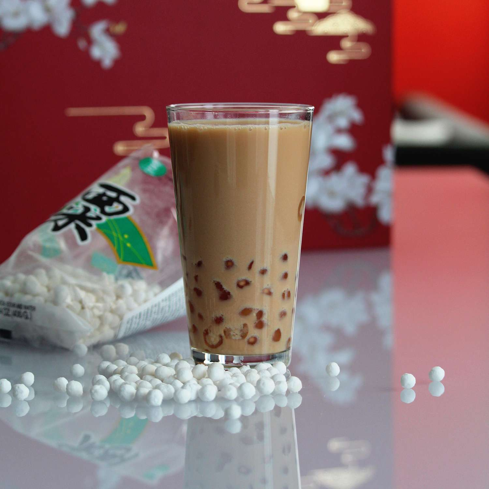

Description
Boba tea, or bubble tea, is a popular drink that originated from Taiwan. I made this coconut variation because I had coconut cream on hand and wanted something different from the regular black milk tea variation. This coconut version tastes just like the one you'll find in a bubble tea cafe.
Ingredients
- 7 cups cold water
- ½ (8.8 ounce) package tapioca starch balls
- ½ cup brown sugar
- ½ cup white sugar
- 4 cups brewed black tea (such as Lipton®), chilled
- 1 (14 ounce) can coconut cream
- 12 ice cubes
- 1 cup milk
- ⅔ cup white sugar
Steps
- Bring water to a boil in a large stockpot. Pour in tapioca and simmer for 25 minutes. Stir occasionally to prevent sticking. Remove from heat and let balls sit in water for 25 minutes.
- Return stockpot to the heat; simmer and stir for 25 minutes more. Remove from heat and let rest again until centers of the balls are no longer powder, another 25 minutes. Drain.
- Combine brown sugar and white sugar in a large bowl. Pour tapioca balls into the sugar mixture. Cover with a damp cloth and let rest for 15 minutes while preparing the tea.
- Process tea, coconut cream, ice, milk, and sugar together in a blender until combined.
- Scoop 1/4 cup of the tapioca into each tall glass and fill with tea. Enjoy with large straws to suck up the tapioca, or use spoons.
Back